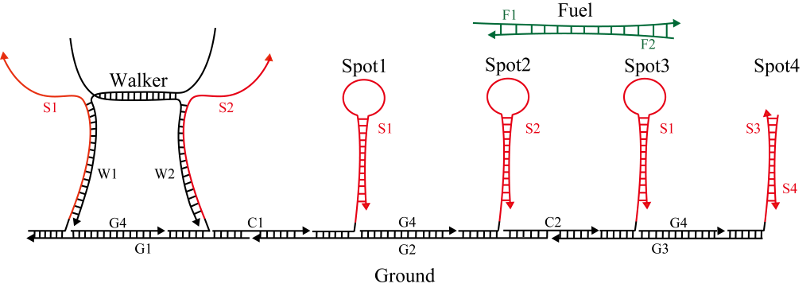

-
Mechanism
我々は、DNAWalkerを用いてDNA折り紙の構造物を動かすシステムを設計した。 最初に、参考にした論文について説明する。このウォーカーは、２本のDNA鎖が部分的にハイブリした構造体で、それぞれの１本鎖の部分が足となっている。また、足場は互いに相補な部分配列を作ってヘアピン構造を形成するように設計されており、燃料DNAが加えられても結合しないようになっている。 しかし、論文ではS1とS2が全く同じ塩基配列のため、Walkerの左足から反応が進むか右足から反応が進むかわからないという問題点がある。右足(w2)から先に反応が進んだ場合、Walkerが宙ぶらりんになってしまい、望まれない反応系となってしまう。 この問題の解決策として、我々はミスマッチ塩基対を利用するという方針を立てた。ミスマッチ塩基対とは、意図しない鎖同士が結合をしないように、部分的に相補でない配列に置き換えることを言う。鎖が結合して２本鎖になる時、それぞれの鎖で相補となる組み合わせが多い為結合するのだから、その組み合わせを意図的に減らして結合しなくするという仕組みである。
アニメーション予定
以下に、ミスマッチ塩基対を利用したWalkerの原理を説明する。表に示す仕様を満たすように、塩基配列にミスマッチ塩基対を組み込んだ。 〇と書いてある組み合わせは結合することを表し、×と書いてある組み合わせは結合しないことを表している。 例えば、S1とF1は結合するのに対し、S1とF2は結合しないといったようになる。 まず、左足(T1)と右足(T2)は異なる配列にし、さらにTractorの足場は下図のように１歩置きに異なる配列にして、左足(T1)とS1、右足(T2)とS2がそれぞれ結合するように設計してある。また、燃料Fuelはミスマッチ塩基対を利用したF1とF2から成る２本鎖となっており、F2のtoeholdは隠されてF11のtoeholdのみむき出しになっている。F1とS1が結合することによってF2と T1が解離して、次に、解離したT1とS2が結合してTractorが動く、という仕組みになっている。 詳しい反応の手順については下の図において8つのステップに分けて説明する。

step1
このプロセスでは、S1とT1を剥がして左足(T1)を浮かせることを目標とする。
- 初期状態
- S1とF1がToehold部分で結合
- S1とF1の鎖置換反応でF2が解離し始める
- T1とF1の鎖置換反応でT1とF2が解離
- F1とS1が結合し、T1が宙ぶらりん

step2
このプロセスでは、Step1で浮かせた左足とSpot1が結合し、１歩進めることを目標とする。
- 初期状態
- 宙ぶらりんになったT1が相補な配列を探索
- T1とSpot1がToehold部分で結合
- T1とSpot1が結合することでヘアピン構造が崩れる。結果的にTractorは一歩進む。

step3
このプロセスでは、T2とs2を剥がしてT2を浮かせることを目標とする。
- 初期状態
- S2とF2がToehold部分で結合
- S2とF2が結合が進む
- S2とF2の鎖置換反応でT2が解離
- F2とS2が結合し、T2が宙ぶらりん

step4
このプロセスでは、Step3で浮かせた右足(T2)とSpot2が結合し、さらに一歩進めることを目標とする。
- 初期状態
- 宙ぶらりんになったT2が相補な配列を探索
- T2とSpot2がToehold部分で結合
- T2とSpot2が結合することでヘアピン構造が崩れる。結果的にTractorは一歩進む。
以降のStepはFuelが完全に消費されていない場合に限り進むため、Fuelの初期濃度が低いとStep3までで反応は終了する。

step5
このプロセスでは、S1とT1を剥がして左足(T1)を浮かせることを目標とする。
- 初期状態
- S1とF1がToehold部分で結合
- S1とF1の鎖置換反応でF2が解離し始める
- T1とF1の鎖置換反応でT1とF2が解離
- F1とS1が結合し、T1が宙ぶらりん

step6
このプロセスでは、Step1で浮かせた左足とSpot1が結合し、１歩進めることを目標とする。
- 初期状態
- 宙ぶらりんになったT1が相補な配列を探索
- T1とSpot3がToehold部分で結合
- T1とSpot3が結合することでヘアピン構造が崩れる。結果的にTractorは一歩進む。

step7
このプロセスでは、T2とs2を剥がしてT2を浮かせることを目標とする。
- 初期状態
- S2とF2がToehold部分で結合
- S2とF2が結合が進む
- S2とF2の鎖置換反応でT2が解離
- F2とS2が結合し、T2が宙ぶらりん

step8
このプロセスでは、Step3で浮かせた右足(T2)とSpot2が結合し、さらに一歩進めることを目標とする。
- 初期状態
- 宙ぶらりんになったT2が相補な配列を探索
- T2とSpot4がToehold部分で結合
- T2とSpot4が結合することでOutputが放出される。結果的にTractorは一歩進む。
このように、ミスマッチ塩基対を組み込むことで一方向にTractorが進むように設計されていることが分かる。
-
Structure